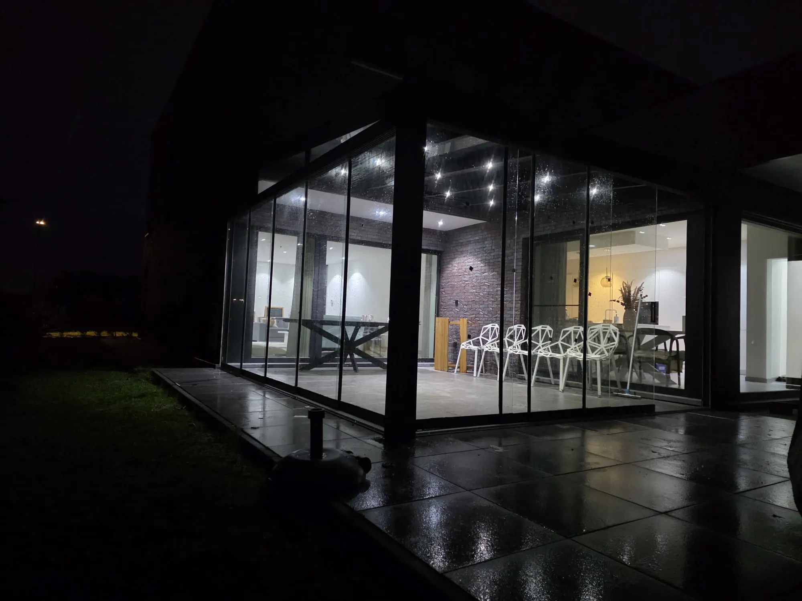
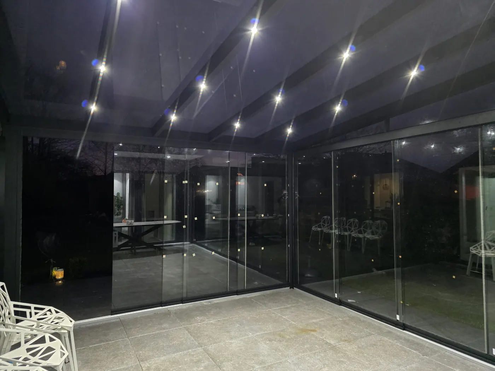
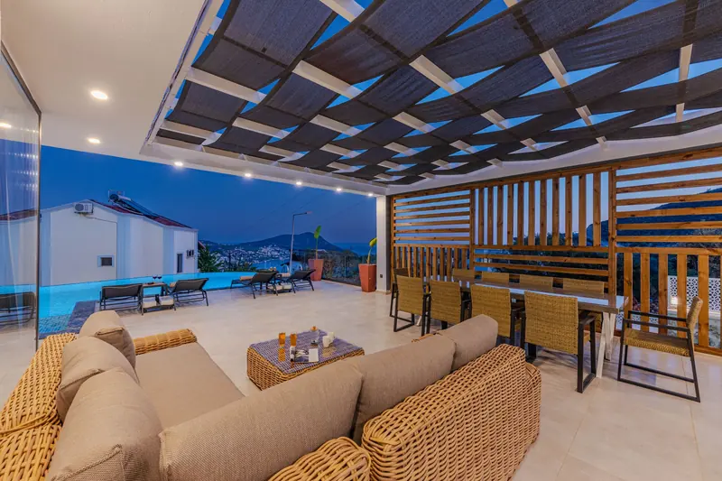

Op de centimeter
Precies op jouw maat
Breedte, diepte, dak en wanden stemmen we af op jouw gevel en tuin. Geen standaardmaat die net niet past.
Veranda's op maat in Nederland en België, sinds ruim 15 jaar

Veranda's op maat · NL en BE
 Getinte schuifwandenGerealiseerd, met LED in het dak
Getinte schuifwandenGerealiseerd, met LED in het dak
Waarom Thema Veranda
Op de centimeter
Breedte, diepte, dak en wanden stemmen we af op jouw gevel en tuin. Geen standaardmaat die net niet past.

Eigen team
Persoonlijk advies, een offerte op maat en vakkundige plaatsing.

Zorgeloos
Afspraken nagekomen en het afval mee. Dat zeggen onze klanten keer op keer.
Wat we maken


01 · Veranda
Een aluminium veranda tegen je gevel of vrijstaand in de tuin. Droog bij regen, schaduw als de zon fel is.
02 · Tuinkamer
Sluit je veranda rondom af met glas of panelen. Een ruimte die je het hele jaar gebruikt.
03 · Glazen schuifwanden
Maximale transparantie en een moderne uitstraling. Schuif ze open op zomerse dagen, dicht als het waait.
04 · Zijwanden
Een zijwand houdt wind en inkijk tegen. Je kiest per kant wat past, ook voor de spie erboven.

Licht aan
Wat kost jouw veranda?
Ons vak
Ruim 15 jaar en meer dan 1.500 veranda's verder weten we één ding zeker: geen tuin is hetzelfde. Daarom maken we alles op maat.


Gerealiseerd


Klanten aan het woord
Vanaf het eerste contact was alles duidelijk en netjes geregeld. Hans en Suleyman hebben de montage uitstekend uitgevoerd: professioneel, vriendelijk en zeer nauwkeurig.
Getinte schuifwandenEnorm veel maatwerk, alles precies op maat geplaatst. De getinte schuifwanden zijn een uitstekende toevoeging. De offerte hebben we direct geaccepteerd.
Glazen schuifwandenAlles heel nauwkeurig uitgevoerd door een vriendelijk team met ervaring op topniveau. Volledig volgens onze wensen, en scherper geprijsd dan de concurrentie.
Veranda met opaal dakEchte vakmensen. Ze komen hun afspraken na, leveren alles netjes af en nemen het afval mee. Een 10 waard en zeker aan te raden.
Open verandaAlles was precies zoals we het wilden en ook op tijd klaar. Het team heeft goed werk geleverd en alles volgens afspraak uitgevoerd.
Rabatwand en glasVakkundige montage, er wordt netjes gewerkt met veel aandacht voor details. Alles zorgvuldig uitgevoerd en het resultaat is mooi.
Glaswanden bij het zwembadHeel mooi afgewerkt en netjes geplaatst. De communicatie was erg goed en het materiaal is mooi en stevig.
Zo werkt het

Kies maat, dak en wanden online, of stuur een foto van je tuin via WhatsApp.

We kijken mee naar je situatie en meten op locatie in, zodat alles klopt.

Een duidelijke offerte, persoonlijk door de eigenaar berekend.
Ons team plaatst je veranda en levert hem netjes op, afval mee.

Vrijblijvende offerte
Je aanvraag komt direct bij de eigenaar binnen, die de prijs persoonlijk voor je berekent en daarna contact met je opneemt.
Thema VerandaHallo! Wil je weten wat jouw veranda kost, of heb je een vraag? Stuur ons gerust een bericht.
Chat openen